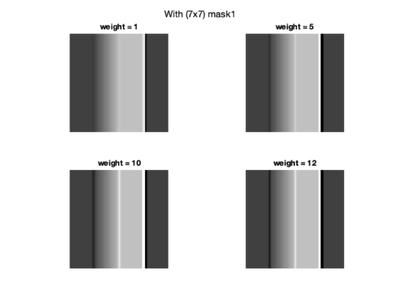

ECE 253, Homework 2
Shivani Bhakta | A13832428 |
Contents
Problem 1 Histogram Equalization
clc; close all; img = imread("lungs.jpeg"); % figure, imshow(img); img_gray = img(:,:,1); figure, imshow(img_gray), title('grayscale lungs image'); ghe = histeq(img_gray); % figure, imshow(ghe), % title('global histogram equalized version - lungs image');
Part(a)
[n,y] = imhist(img_gray,256); map = cumsum(n); map = map / max(map); % normalize figure, imshow(img_gray, [map map map]), title('Gray image with CDF mapping part a'); % figure, plot(y,map), title('CDF'), hold on;
- Here, "map" represents the cummulative sum of the counts of each pixel (that are 0-255), given from the imhist. This will return the same matrix size as the input. Each entry is the cummulative sum of all the entries above. This means the last entry will be the total of the entire vector and the maximum value of the vector/1-D matrix.
- When we divide the map we get from cumsum with the max value in the map, we are basically normalizing the array to be between 0 to 1. This allows for the plot to have x-axis going from 0 to 255, which are the pixel intensity and y-axis shown from 0 to 1 due to the normalization above and the plot has the increasing curve which represents the CDF (cummulative distribution function) of the histogram of the gray img.
- With the imshow command the image being shown is showing the remapped pixels using the remapping function that is CDF of the image. The map input in imshow has an array of 3 map input because of the matlab colormap convention that takes in one value input for each RGB values. So basically each row of map is a three-element RGB triplet that specifies the red, green, and blue components of a single color of the colormap.
Part(b)
figure, plot(y,map), %title('CDF part a'); hold on; % [n,y] = imhist(b,256); n(1) = 0; % n(255) = 0; map = cumsum(n); map = map / max(map); % normalize % figure, %.Position = [100 100 540 400]; plot(y,map) % title('CDF after part b') legend('CDF part a','CDF after part b') figure() imshow(img_gray, [map map map]) title('New image part b')
- As it can be seen from the image, the dark background in the image was hurting the histogram equalization. Thus if we just "ignore" those dark pixels aka the count of pixel 0 is 0, it will help a lot to see the smaller detailed in the image. This basically means we change our n variable's first entry to zero. So using the CDF of this n, we will be able to generate new map and plot the new image.
- As it can be seen from the equalized images, in the new image we are able to see the details of the image clearly, which was not really visible due to the dark background from the first mapping. This can also be seen on the CDF plot, that we have zero pixels that are dark and this we just decreased the count of the darker pixels overall.
Problem 2 Noise Cleaning
clc; clear; close all; % img = imread("lungs.jpeg"); cleanbaby = load('cleanbaby.mat').cleanbaby; % image w/o added noise % image w/ salt noise added (vertical streaks) babyS = load('babyS.mat').babyS; baby2 = load('baby2.mat').baby2; %image w/ salt + low level gaussian noise
Part(a)
% * 1x3 Filter MF_babyS = medfilt2(babyS,[1 3]); MF_baby2 = medfilt2(baby2,[1 3]); % mean squared error mseS = immse(cleanbaby, MF_babyS); mse2 = immse(cleanbaby, MF_baby2); fprintf(['Following MSE is calculated on images filtered using ' ... 'the 1x3 median filter. \n \n']); fprintf(['The MSE betweeen the filtered babyS and cleanbaby ' ... 'image: %f \n'], mseS); fprintf(['The MSE betweeen the filtered baby2 and cleanbaby ' ... 'image: %f \n'], mse2); % * 3x3 Filter MF_babyS = medfilt2(babyS,[3 3]); MF_baby2 = medfilt2(baby2,[3 3]); % mean squared error mseS = immse(cleanbaby, MF_babyS); mse2 = immse(cleanbaby, MF_baby2); fprintf(['\nFollowing MSE is calculated on images filtered using ' ... 'the 3x3 median filter. \n \n']); fprintf(['The MSE betweeen the filtered babyS and cleanbaby ' ... 'image: %f \n'], mseS); fprintf(['The MSE betweeen the filtered baby2 and cleanbaby ' ... 'image: %f \n'], mse2);
Following MSE is calculated on images filtered using the 1x3 median filter. The MSE betweeen the filtered babyS and cleanbaby image: 4.486189 The MSE betweeen the filtered baby2 and cleanbaby image: 6.736691 Following MSE is calculated on images filtered using the 3x3 median filter. The MSE betweeen the filtered babyS and cleanbaby image: 5.514147 The MSE betweeen the filtered baby2 and cleanbaby image: 6.471014
- The 1x3 filter does better (in terms of MSE) than 3x3 filter for babyS. The median filter in general is good for removing salt and pepper noise. Salt noise as we know it, is random white pixels (white dots in an image), which in our case is distributed like vertical streaks in babyS. Here what 1x3 median filter does is, it takes the 3 values in the neighborhood (within that row) and sorts them, chooses the median and assigns it to the pixel of interest. This forces pixels with distinct intensities to be more like it's neighbours. This 1x3 works better than 3x3, because, the former sorts all 9 values (includes 3 rows), potentialy having more noise, since our noise is distributed vertically, making it more error prone than just looking at the row, which 1x3 does well.
- The 3x3 filter does better (in terms of MSE) than 1x3 filter for baby2. Notice that baby2 has added low level of Gaussian noise on top of the salt noise we saw in babyS. Thus even though 1x3 does better for babyS, it doesn't do that well for baby2 due to this added Gaussian noise. Here, 3x3 filter helps because of the low level of Gaussian noise, it will look at the entire neighbourhood and choose the median which will remove all the low extream as well as high and actually chooses the value in the sequence, rather than random number like mean filter could give, that might not even be part of the sequence.
Part(b)
MF_baby2 = medfilt2(baby2,[3 3]); Spatial_filter = 1/8 * [0 1 0; 1 4 1; 0 1 0]; % mse = 6.177217 % Spatial_filter = 1/9 * ones(3,3); % mse = 8.713174 % Spatial_filter = 1/10 * [1 1 1; 1 2 1; 1 1 1]; % mse = 8.092480 % Spatial_filter = 1/16 * [1 2 1; 2 4 2; 1 2 1]; % mse = 7.311363 SA_baby2 = imfilter(MF_baby2, Spatial_filter); % mean squared error mse3 = immse(cleanbaby, SA_baby2); fprintf(['\nFollowing MSE is calculated on image filtered using ' ... 'the 3x3 median filter \n' ... 'and a spatial averaging 3x3 mean filter. \n \n']); fprintf(['The MSE betweeen the filtered baby2 and cleanbaby ' ... 'image: %f \n'], mse3); MF_baby2 = medfilt2(baby2,[1 3]); SA_baby2 = imfilter(MF_baby2, Spatial_filter); % mean squared error mse3 = immse(cleanbaby, SA_baby2); fprintf(['\nFollowing MSE is calculated on image filtered using ' ... 'the 1x3 median filter \n' ... 'and a spatial averaging 3x3 mean filter. \n \n']); fprintf(['The MSE betweeen the filtered baby2 and cleanbaby ' ... 'image: %f \n'], mse3);
Following MSE is calculated on image filtered using the 3x3 median filter and a spatial averaging 3x3 mean filter. The MSE betweeen the filtered baby2 and cleanbaby image: 6.177217 Following MSE is calculated on image filtered using the 1x3 median filter and a spatial averaging 3x3 mean filter. The MSE betweeen the filtered baby2 and cleanbaby image: 5.558170
- Here, the sequential use of a median filter and a spatial averaging filter on the baby2 image that has both noise type works better than either of the median filters in part a. However, it is not a significant difference (just ~0.91 mse) from the lowest in part a.
- We see that using the 1x3 is better than 3x3 median filter in this sequence, it is because of the same reason as mentioned in part a. We have vertical salt noise and hence 1x3 is better. So with first operation in the series, we are decreasing that salt noise. Once we get rid of most of the salt noise, we can say that we are somewhat only left with the Gaussian noise.
- Now, because averaging works better with removing gaussian noise, we have better results than just using 3x3 median filter alone for the gaussian noise. Spatial average filter will replace each pixel with the average of it's all neighbours, this will help with the smoothing of the image.
- One thing to note here is that, I tried varies spatial averaging filter, but the only one that actually recudes the error is the strong center weighted averaging filter, rather, the others don't give much different results that part a. This might be because we have the low frequency gaussian noise, and this the strong center helps with keeping the avg close to the pixel of interest and not skew towards the smaller outliers.
Problem 3 Unsharp Masking
Part(a)
clc; clear; close all; type unsharp.m
function im_out = unsharp(im_in, maskA, weight)
% INPUTS:
% im_in : Input Image
% maskA : small odd-sized lowpass filter mask (LPF)
% weight : positive number (k >= 1)
% OUTPUTS:
% im_out : Output Image
[a,b] = size( maskA );
maskB = zeros( size( maskA));
maskB(ceil(a/2),ceil(b/2)) = 1; % Original Signal (matrix of zeros with center 1)
maskC = maskB - maskA; % highFreq (HPF(orig)) = orig - LPF(orig)
maskD = maskB + weight * maskC; % output = orig + k * HPF(orig) : : unsharp mask
im_out = conv2(im_in,maskD,'valid'); % sharpened signal
end
EXPLANATION
- Mask B can be seen as the original signal, which is basically a matrix of zeros with 1 on the center position
- Mask C is the difference of original signal and the input of mask A, which is the lowpass filter mask (LPF), which is basically highpass filter mask (HPF). Because orignal signal is just the summation of HPF and LPF
- Mask D is the unsharp mask, which is the HPF added to the orignal signal with some positive weight multiplied to it.
- This function performs edge sharpening by taking in the orignal image and lowpass filter image and finds the highpass filter mask to be added to the original image. By defination, the edge sharpened image is generated by adding the high frequency mask to the original image. What high frequency mask means the pixel values that changes quickly, and this happens on the edge of objects in an image. Thus, adding a weighted highpass filter mask, just "bolds" the borders or the edges of the image. Hence, this function performs edge sharpening by just adding the high frequency content to the input image.
Part(b)
tst = ones(128,1)*[64*ones(1,32) (64:4:188) 192*ones(1,32) 64*ones(1,32)]; % first 32 col'ns w/ value 64, then 32 col'ns 64 of ramp going from 64 to % 199, then 32 columns of value 192 and finally 32 col'ns of value % imshow(tst, [0 255]) figure() plot(tst(64,:));
Edge shapening with 3x3 Mask
% weighted mask mask1 = (1/9) * ones(3,3); % masks=[mask1,mask2,mask3,mask4]; weights = [1, 5, 10, 12]; figure() for ii = 1:4 outA = unsharp(tst,mask1, weights(ii)); subplot(2,2,ii) imshow(outA, [0 255]) str = sprintf("weight = %d",weights(ii)); title(str) end sgtitle("With (3x3) mask1 = (1/9) * ones(3,3)" ) figure() plot(outA(64,:)); % center-weighted low pass filter mask2 = (1/8) * [0 1 0; 1 4 1; 0 1 0]; figure() for ii = 1:4 outA = unsharp(tst,mask2, weights(ii)); subplot(2,2,ii) imshow(outA, [0 255]) str = sprintf("weight = %d",weights(ii)); title(str) end sgtitle("With (3x3) mask2 = (1/8) * [0 1 0; 1 4 1; 0 1 0]" ) figure() plot(outA(64,:)); % mask3 = (1/10) * [1 1 1; 1 2 1; 1 1 1]; % figure() % for ii = 1:4 % outA = unsharp(tst,mask3, ii); % subplot(2,2,ii) % imshow(outA, [0 255]) % str = sprintf("weight = %d",ii); % title(str) % end % sgtitle("With (3x3) mask3 = (1/10) * [1 1 1; 1 2 1; 1 1 1]" ) mask4 = (1/16) * [1 2 1; 2 4 2; 1 2 1]; figure() for ii = 1:4 outA = unsharp(tst,mask4, weights(ii)); subplot(2,2,ii) imshow(outA, [0 255]) str = sprintf("weight = %d",weights(ii)); title(str) end sgtitle("With (3x3) mask4 = (1/16) * [1 2 1; 2 4 2; 1 2 1]" ) figure() plot(outA(64,:));
- First, looking at the images as we increase the weight for the highpass filter, we get a higher jump from bright to dark regions. This means that we have a white region on the left of the black line aka the border. This is again "bolding" the edge due to the HPF. The higher the weight the bolder it gets. This is true for all 3x3, 5x5, and 7x7 Lowpass filters.
- Now, let's look at what happens when we increase the filter size, the edges get smoother and brighter.
- Another differece we can observe is the different between the center-weighted low pass filter vs regular avg. The different is not much evident, but if we look closer, the images does seem little darker for the center-weighted over the regular filter, for both 3x3 and 5x5 filter.
Edge shapening with 5x5 Mask
mask1 = 1/25 *ones(5,5); figure() for ii = 1:4 outA = unsharp(tst,mask1, weights(ii)); subplot(2,2,ii) imshow(outA, [0 255]) str = sprintf("weight = %d",weights(ii)); title(str) end sgtitle("With (5x5) mask1 = 1/25 *ones(5,5)" ) figure() plot(outA(64,:));
mask2 = (1/125)* [1 4 6 4 1;
4 16 24 16 4;
6 24 36 24 6;
4 16 24 16 4;
1 4 6 4 1 ];
figure()
for ii = 1:4
outA = unsharp(tst,mask1, ii);
subplot(2,2,ii)
imshow(outA, [0 255])
str = sprintf("weight = %d",ii);
title(str)
end
sgtitle("With (5x5) mask2" )
figure()
plot(outA(64,:));
Edge shapening with 7x7 Mask
mask1 = 1/49 * ones(7,7); figure() for ii = 1:4 outA = unsharp(tst,mask1, weights(ii)); subplot(2,2,ii) imshow(outA, [0 255]) str = sprintf("weight = %d",weights(ii)); title(str) end sgtitle("With (7x7) mask1" ) figure() plot(outA(64,:));
Part c
blur_moon = read(Tiff('blurry-moon.tif', 'r')); figure(), imshow(blur_moon) title('Original Blurry moon picture') blur_moon = double(blur_moon); f = (1/159) * [2 4 5 4 2; 4 9 12 9 4; 5 12 15 12 5; 4 9 12 9 4; 2 4 5 4 2]; boost_values = [8, 10, 15, 20, 22, 25]; HF_img = blur_moon - filter2(f, blur_moon, 'same'); outA = blur_moon + boost_values(1)* HF_img; figure() % subplot(3,3,1) imshow(outA, [0 255]) title(sprintf("weight = %d",boost_values(1))); % % outA = unsharp(blur_moon,f, boost_values(2)); % subplot(3,3,2) % imshow(outA, [0 255]) % title(sprintf("weight = %d",boost_values(2))); % % outA = unsharp(blur_moon,f, boost_values(3)); % subplot(3,3,3) % imshow(outA, [0 255]) % title(sprintf("weight = %d",boost_values(3))); figure() outA = unsharp(blur_moon,f, boost_values(4)); % subplot(3,3,4) imshow(outA, [0 255]) title(sprintf("weight = %d",boost_values(4))); % outA = unsharp(blur_moon,f, boost_values(5)); % subplot(3,3,5) % imshow(outA, [0 255]) % title(sprintf("weight = %d",boost_values(5))); figure() outA = unsharp(blur_moon,f, boost_values(6)); % subplot(3,3,6) imshow(outA, [0 255]) title(sprintf("weight = %d",boost_values(6)));
In this question we are using given Gaussian Lowpass filter to perform high boost filtering. It is pretty much similar code as previous part. Here, I used different boost values ranging from 1 to around 30 and some of the results are shown above. What I noticed from the different boost values is that the original blurry moon image gets better as we increase the boost value, i.e, the blurryness decreases and the details are being visible. However, after certain threshold, the image starts to become too sharp for us to see much of the moon and it's just becomes some black and white image. The range that works best is of boostvalues between 8/10 to 20.
Problem 4 Order of Operations
Part a
Out of the 6 systems given, 2 pairs will have the same results.
- System B: CS --> MF --> SA and System D: MF --> CS --> SA
- System C: SA --> CS --> MF and System E: SA --> MF --> CS
Here, Contrast Manipulation (CS), Spatial averaging (SA) and Median Filter (MF) So basically, it doesn't matter if we perform the Contrast Manipulation or Medical Filtering, as long as they are done sequencinally without any other operation in the middle, they result into the same output. This is because the square root operation doesn't affect the median of the matrix. We can see it as an increasing function which will have the same median regardless of the square root mapping. This is true for both pairs. For first pair, it doesn't matter if we do CF or MF first, SA will have the same input. Simiarly, for second pair, once we perform SA, we will not have to worry about the order of operation for MF or CS
I used matlab to find the MSE and see how different each of the operations are.
Part b
As we have seen throughout this assignment and class lectures, Median Filtering is really good at removing noises like salt-pepper, other spikes or sudden changes, vertically distributed, or there are random spurs. Therefore, it is really necessary to use MF before the SA, just like Problem 3. This will replace any high/low pixels with the median, which would techinally be part of the image and not a random number like SA would generate, making is blurred noise instead of removing the noise all together. Therefore, B and D would definally perform better becayse MF is being perform before SA. Similarly, A will also have better results than C, E, or F as SA is being performed before MF. We can confirm the above by looking at MSE of baby2 with clean image for each of the operations. Results are below.
clc; clear; close all; % img = imread("lungs.jpeg"); img = load('baby2.mat').baby2; img = im2double(img(:,:,1)); % MF_A = medfilt2(img,[3 3]); SA_A = imfilter(MF_A, 1/9 * ones(3,3)); CS_A = sqrt(SA_A); CS_B = sqrt(img); MF_B = medfilt2(CS_B,[3 3]); SA_B = imfilter(MF_B, 1/9 * ones(3,3)); SA_C = imfilter(img, 1/9 * ones(3,3)); CS_C = sqrt(SA_C); MF_C = medfilt2(CS_C,[3 3]); MF_D = medfilt2(img,[3 3]); CS_D = sqrt(MF_D); SA_D = imfilter(CS_D, 1/9 * ones(3,3)); SA_E = imfilter(img, 1/9 * ones(3,3)); MF_E = medfilt2(SA_E,[3 3]); CS_E = sqrt(MF_E); CS_F = sqrt(img); SA_F = imfilter(CS_F, 1/9 * ones(3,3)); MF_F = medfilt2(SA_F,[3 3]); clean_img = load('cleanbaby.mat').cleanbaby; clean_img = im2double(clean_img(:,:,1)); tA = immse(clean_img, CS_A) tB = immse(clean_img, SA_B) tC = immse(clean_img, MF_C) tD = immse(clean_img, SA_D) tE = immse(clean_img, CS_E) tF = immse(clean_img, MF_F) % imshowpair(MF_C,CS_E,'montage')
tA =
0.0513
tB =
0.0511
tC =
0.0520
tD =
0.0511
tE =
0.0520
tF =
0.0516